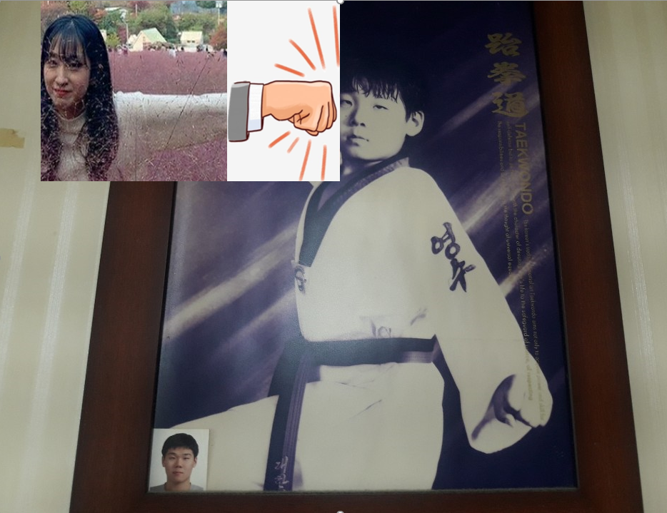
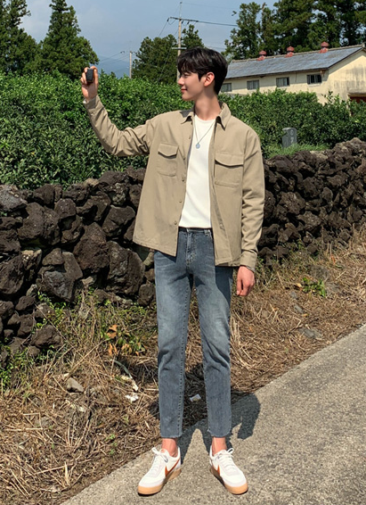

Youtube
#Herry
#Boro
#World
환영합니다. Herryboro 월드입니다. 신입(초보) #개발자 가 저지르기 쉬운 실수들을 모아봤습니다. 이 습관들만 개선해도 같이 일하고 싶은 개발자로 사랑 받을 수 있습니다😉! 좋은 개발자를 꿈꾸며 오늘도 '구독'과 '좋아요' 눌러주세요♥
1M views 1 month ago
1K
0
Share
Save
Report
HerryWorld by herryboro
1M subscribers
subscribe
Up Next

조세진! 서울 사당 인근의 영수태권도에 다니는 한 어린아이를 주먹으로 폭행. 경찰 오늘 오후 구속영장 신청
HerryWorld by herryboro
82K views

인스타그램 풀스택 클론 코딩의 최종 완성본을 공개합니다!! - 백엔드: 장고, 자바스크립트 - 프런트엔드: 리액트 JS - 앱: 리액트 네이티브 - 마지막 AWS 까지 +++ https://nomadcoders.co/instaclone . . Youtube 구독은 사랑입니다 ❤️ 니콜라스와 코딩 공부하기 👉🏻https://nomadcoders.co 👈🏻 노마드 코더가 궁금하다면? 💃 https://linktr.ee/nomad_coders 💃
노마드 코더 Nomad Coders
조회수 10,594회
가족들과 충분한 상의를 한후 입양을 결정하였습니다. 저희가 입양한 냥이는 번식장에서 태어나 아프다는 이유로 버림받고 구조된 아이에요 현재는 건강한 편이고요 구조묘,유기묘 입양에 관심 있으신 분들은 영상내에 있는 쉼터 인스타로 문의 주시면 상담 받으실 수 있어요!
뚜아뚜지TV
조회수 92,409회